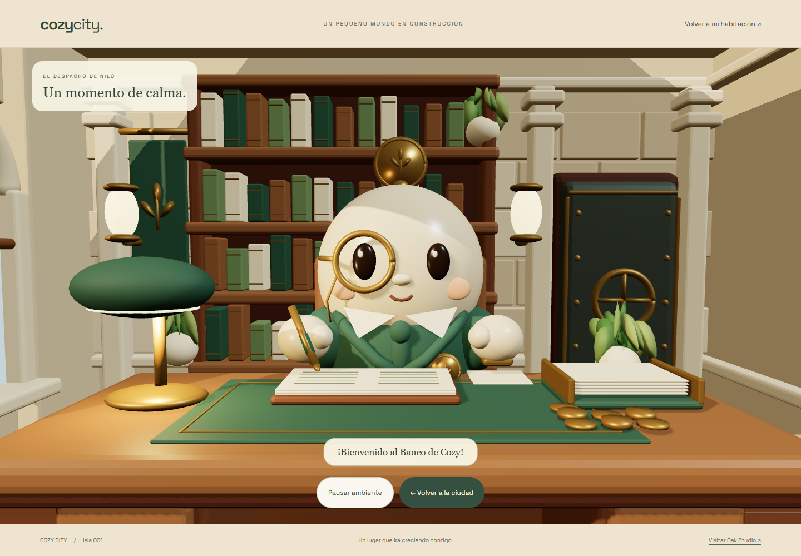
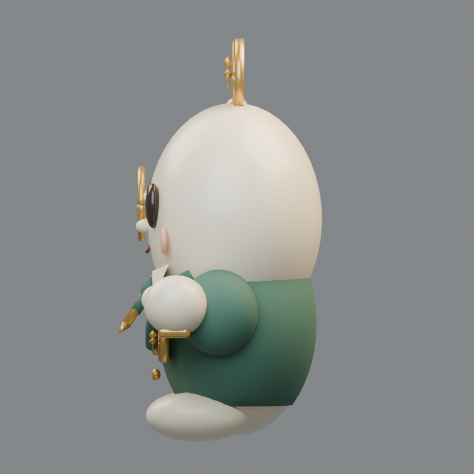
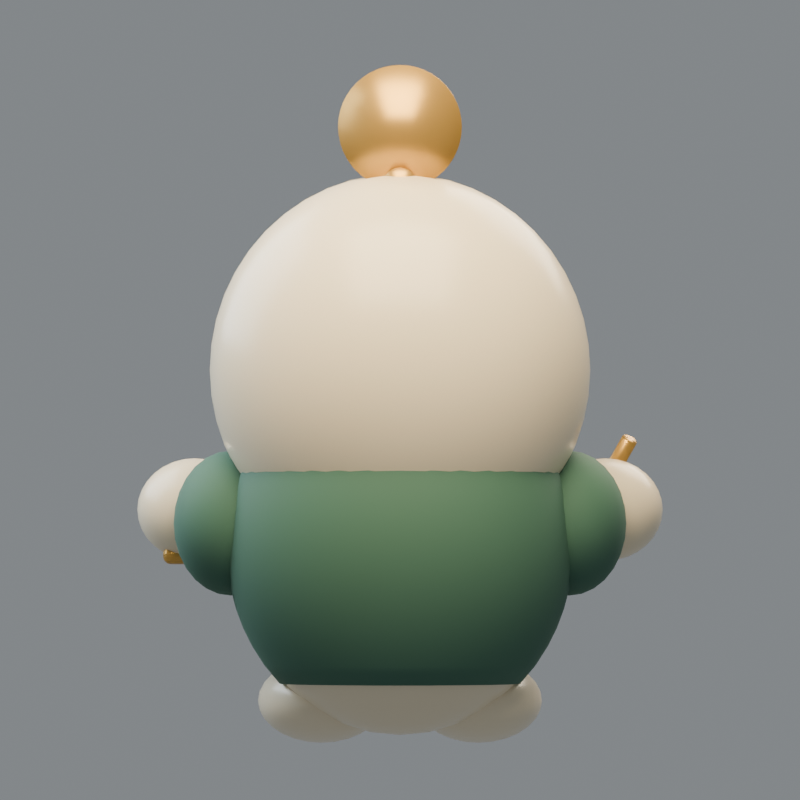
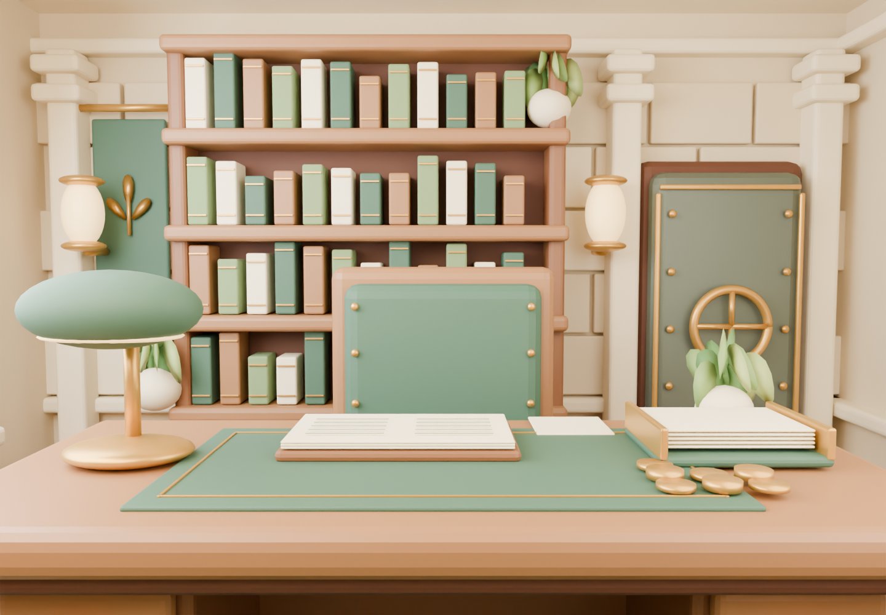
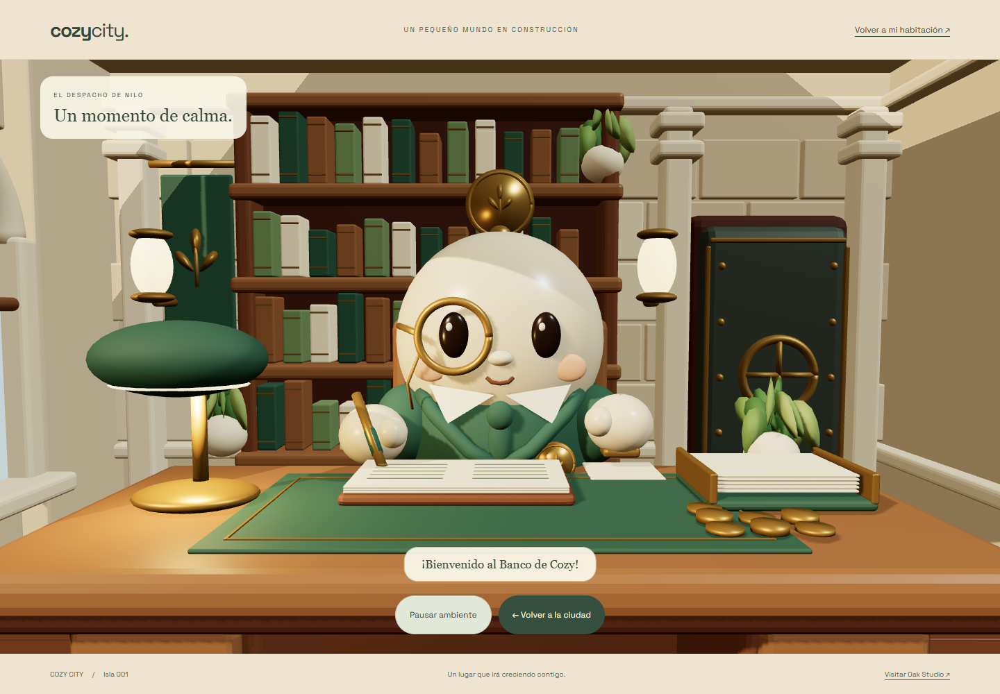
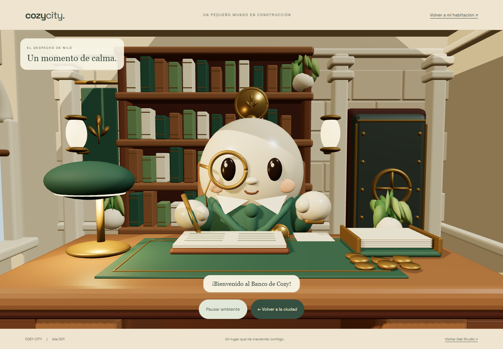
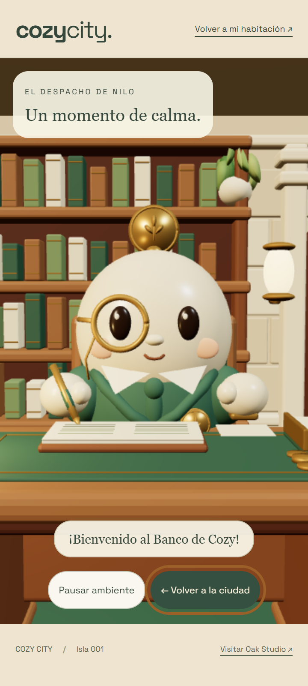

De la isla al despacho.
Pulsa el Banco: la cámara se acerca, las puertas se abren y Nilo te saluda. Al salir recuperas tu encuadre.
Grabación real del navegador, incluidos los desvanecimientos y la interfaz.
Nilo, desde todos los ángulos.







Dos modelos independientes.

Modelo GLB de Nilo y sus animaciones · Modelo GLB del despacho
Pequeños gestos.


También en móvil.

Encuadre vertical propio, entrada táctil, controles accesibles y regreso con la cámara conservada.
La validación incluye diez visitas consecutivas, movimiento reducido y recuperación tras un fallo de carga.